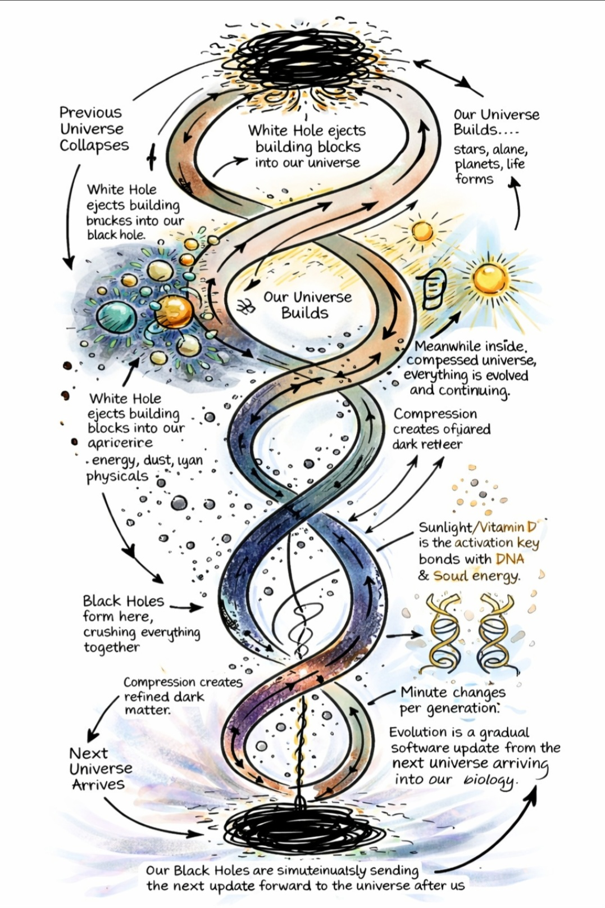

Azzopardi Framework
A Unified Theory of Consciousness, Gravity, and Cosmic Evolution
Reality is a Mobius surface where energy, consciousness, and universes do not end, but simply invert at a single point of creation where the outside becomes the inside. This framework, which emerged from a fundamental human inquiry into the nature of death and the soul, posits that the Earth acts as a sentient system cycling energy through living things to the Sun, which serves as a gestating stellar body stabilized by its planetary system. We exist within an alive, recursive system where time, energy, and consciousness form a self-evolving geometry—the spiral—ensuring that birth and death are not opposite ends, but the same point approached from different directions on a continuous surface with no beginning or end.
I. The Cosmic Geometry
Existence is a continuous surface where birth and death are merely the twist point where the surface inverts. The spiral is the motion that defines our trajectory through the Mobius topology.
 Fig 1: The Geometry of Universal Inversion
Fig 1: The Geometry of Universal Inversion
II. The Inter-Universal Relay
Our universe functions as an information relay. White holes deliver building blocks from the past, while black holes compress our current existence into refined data—Dark Matter—to seed the next universal cycle.
 Fig 2: Transmission Logic and Information-Density
Fig 2: Transmission Logic and Information-Density
III. Biological Integration
Evolution is a directional update cycle. Sunlight and Vitamin D synthesis serve as the biological installer, bonding inter-universal dark matter data to our DNA over generational timescales.

Fig 3: The Inter-Universal Software Update